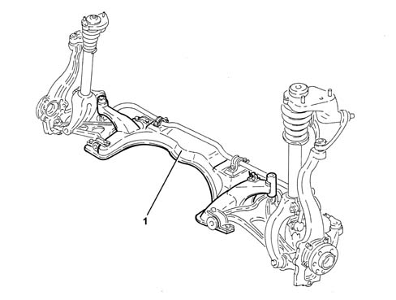

4410D frame and cross beam
- Path
- Descriptions > 44 SUSPENSION AND WHEELS > 4410 FRONT SUSPENSION > 4410D frame and cross beam
- Kind
- system description
- Applies to
- engines: 1.6 TS, 2.0 TS; all production periods
- Interactive page
- https://sloeber94.github.io/elrnDB-a147/en/#/3022503
Applies to: engines: 1.6 TS, 2.0 TS; all production periods
SPECIFICATIONS:
VIEW OF ASSEMBLY

1 - Suspension frame
The suspension frame, made of steel plate, connects and supports the right and left suspension quadrilaterals. The torsion bar and power steering box are also attached to the frame. The configuration of the assembly, which allows the suspension mountings to be separated from the body, apart from offering ease of assembly/dismantling, ensures that the original geometric characteristics are maintained.